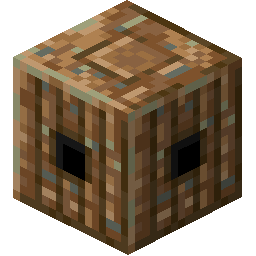
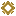
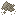
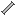

1.20.1 / (Addon) Firmalife擴充套件模組 / Irrigation

Irrigation
Irrigation
The Sprinkler is a device that sprinkles water in a 5x6x5 area centered on the block below the sprinkler block. You know it is working when it drips out water particles. Sprinklers placed facing up irrigate the same 5x6x5 area above.


第一級
The sprinkler is made with a Copper Sheet.
Sprinklers must be connected to a system of pipes that feed it water in order to work. This is done by connecting a series of Copper Pipes to them. Copper Pipes transport water up to 32 blocks to a sprinkler. They are connected to Irrigation Tanks or Pumping Stations.
8
第一級
The copper pipe is made with a sheet.

Pumping stations must be above a source block of water in order to work, and be connected to mechanical power. Irrigation tanks can also serve water through their ports on the sides, provided that they are stacked at most 3 blocks high above a pumping station on other tanks.





4
Oxidized pipes are the same as regular copper pipes, except they do not connect to the other kind of pipe.

8
Greenhouse ports have a single pipe inside of them. They can be used to pass water through the walls of greenhouses!